Installing iTunes on your PC
iTunes is a software application that runs on the PC to allow you to connect to your iOS device.
To use it with Park Observer, you do not need an Apple account, or access to the App Store,
or any other online services. The functionality you need has nothing to do with music.
BE WARNED: Getting iTunes installed and working correctly with the NPS/DOI software settings
can be the most troublesome part of working with Park Observer. Please read these instructions
carefully. The biggest source of trouble is using a version of iTunes that is incompatible with
our network -- it may run, but doesn't connect correctly to your device, or does not allow
application installation or file transfer.
DO NOT install iTunes from the Apple website. The Apple version
is incompatible with the NPS settings for Windows 10.
If you already have iTunes installed, you can try to
connect your device to iTunes. If you are unable to connect to your
device, or unable to install Park Observer, or
Add Files to Park Observer, then
uninstall iTunes, and install the latest version per these instructions.
These instructions were written on September 2, 2020 with the following versions of software:
- Windows 10 version 1809
- iTunes 12.10.8.5
It is likely that these instructions will work with other versions if installed per the
following instructions. If these instructions do not work for you,
please let us know what problems you are having, as well as which version of Windows
and iTunes you are using. We will investigate and update these instructions as necessary.
Launch the Windows Store
- Click the start menu 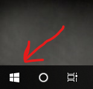
- Type
store
- Press the Enter key
You will need to log into the Windows Store with your Microsoft Office 365
account. This account is tied to your NPS network account, so you may log
automatically. If not you might be prompted with something like this:
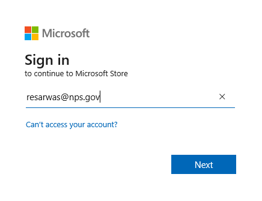
or something like this:
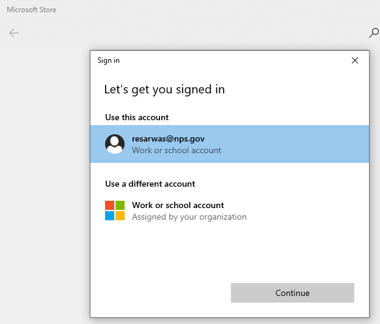
Clicking Continue or Next will take you the DOI authentication page:
You will need to enter you network password (not your PIV PIN, but the one you have to change every 2 months)
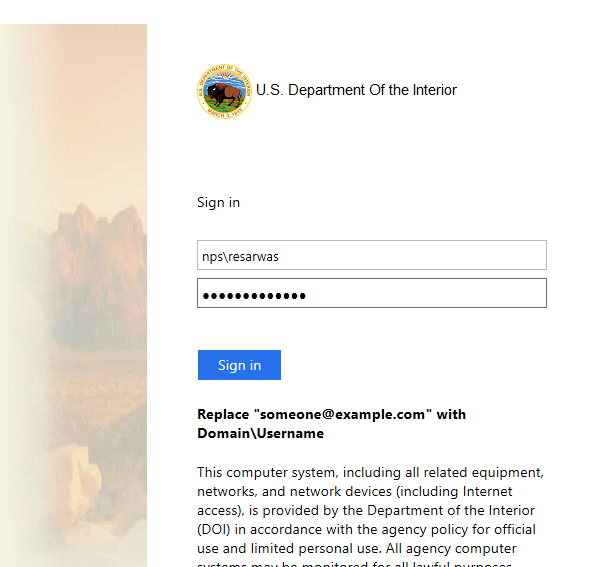
then click Sign In.
You will then be told you need to provide additional information,
Scroll down and click on Sign in with PIV Card
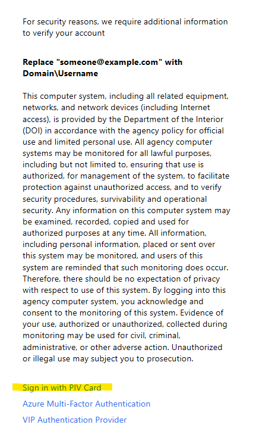
Make sure your PIV card is inserted in the computer, and enter
your PIN when prompted.
When you are logged into the Windows Store you should see something like the following:
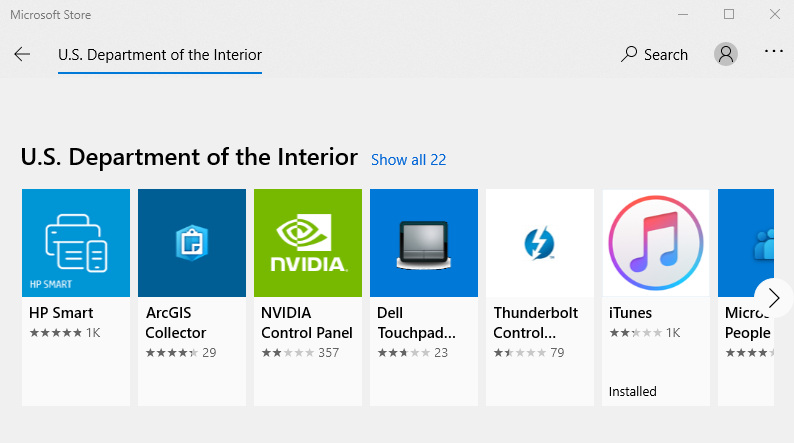
Download iTunes
In the Windows Store, click on the iTunes option, and the download will begin.
When the download is complete you will get a notification in the lower right.
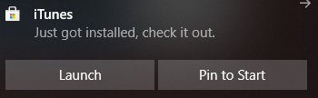
Click the Launch button. Accept the license agreement and iTunes should launch.
Click No Thanks on the welcome screen
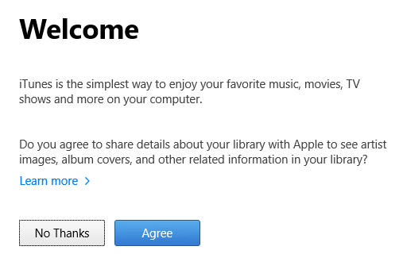
Ignore the options to go to or sign in the the iTunes store. You do not need to log into the Apple Store, the
iTunes store, or any other service. When iTunes finishes launching,
you should see a screen similar to the following:
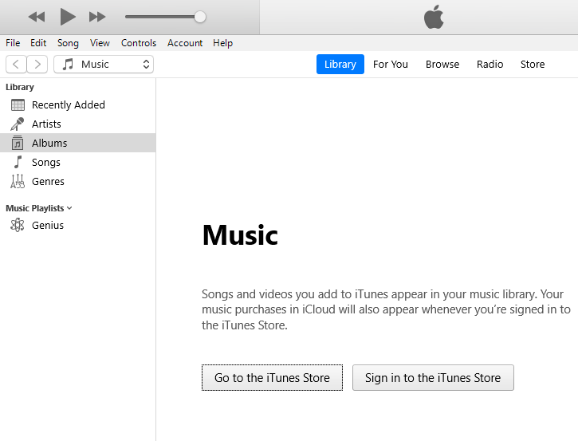
Connecting your device to iTunes
If you get any errors in this process and you cannot see your device in iTunes,
the first thing to suspect is the version of iTunes on your PC.
Please check the help page on Installing iTunes to ensure
you are using the correct version. Delete and reinstall
iTunes (per the instructions!) before continuing.
Use a USB to lightning (charging) cable to connect your device to the PC.
The first time you connect your device, you will see a notification that
iTunes is setting up your device. You will see another notification when it is done.
You will be asked if you want to allow the computer to access the device.
Make sure your device is on and unlocked.
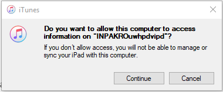
Then click continue.
You will be prompted on your device to trust the computer.
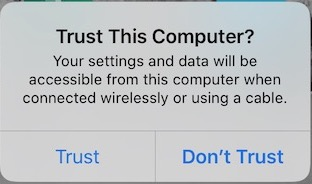
Tap on Trust and enter your device pass code.
You may then get prompted by iTunes to upgrade your device.
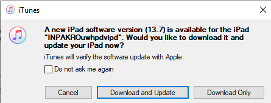
I encourage you to keep your device up to date, however you can skip this step
(click cancel) and upgrade your device later if you want.
I prefer to upgrade my device over WiFi, and not via iTunes.
If your device is successfully connected to iTunes, you will see a mobile device
icon in the top left of the iTunes screen
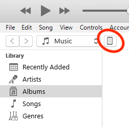
You are now ready to Install Park Observer,
or Install Additional Files
after Park Observer has already been installed.
Installing Park Observer
- You will need to download the installation file (*.ipa) from the downloads
page to your desktop (or folder of your choice).
- Ensure that your device is on and unlocked.
- Start iTunes on your PC: Start menu, type itunes, press enter key
- Connect your device to the PC.
If you have trouble with this step, please check your version of iTunes
and the instructions for Installing iTunes,
and connecting your device to the PC
- Drag the installation (*.ipa) file from your windows desktop (or folder of your choice)
to the name of your device in the table of contents in iTunes.
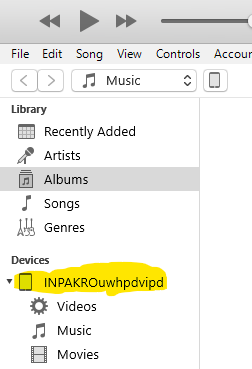
This area will get a blue halo when the drop will work and the dragged file will
display Link when it can be dropped. The dragged file will show a red "no entry"
circle ( 🚫) when it cannot be dropped. It is not enough just to see the Link text,
because that will appears when you are over other parts of the screen.
You need to see the blue highlight of your device name.
Dropping the install file on the device in iTunes will begin the installation.
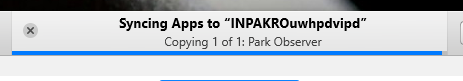
If it complete successfully, you will have a Park Observer 2.0 icon  on your device (check all the screens if you do not see it).
on your device (check all the screens if you do not see it).
You can now disconnect your device.
Launching Park Observer
Tap the Park Observer 2.0 icon
on your device.
If this is a first install of Park Observer you will see this warning
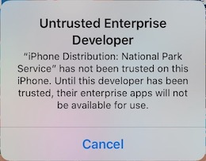
In order for Park Observer to run on your device you must trust the developers
at the National Park Service. You only need to do this once, so you will not see
this warning if you have Park Observer 1.x or 2.x) already installed.
To enable Park Observer, you must have internet access. The trust process requires
validating the developer certificates in Park Observer with Apple's servers. Typically
you cannot access Apple's servers from the Arrowhead WiFi, so if the following step
fails, then either 1) turn off WiFi and use cellular data (if available on your device),
or 2) connect to different WiFi (home, cafe, airport, etc.) and try again.
- Launch the Settings app
- Select
General
-
At the bottom of the list, tap on Device Management, then National Park Service
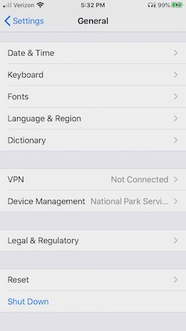 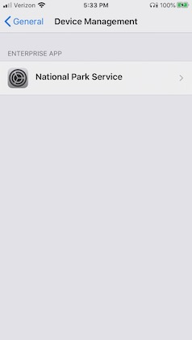
-
Then tap on Trust "National Park Service"
-
In the pop up alert box, tap on Trust
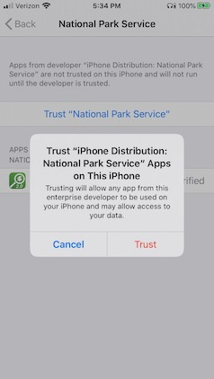
-
This should complete the trust process. Return to the home screen and
try running Park Observer again.
If Park Observer launches successfully, you should see a screen like this:
On the first tap
of the start track log button
or the GPS Button ,
you will be prompted to allow location services.
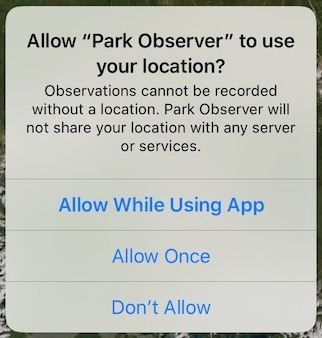
You should tap Allow While Using App.
Park Observer expects to use your GPS, and functionality will be greatly limited
without location services.
If you enable background track logging (in the settings menu) you will be prompted again.
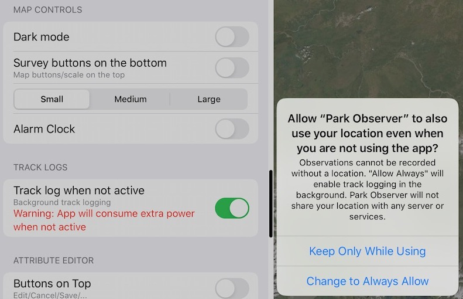
Select Change to Always Allow. You may get prompted again in a few days to confirm that you
are still OK with background location data collection. You can change your
choice at any time in the settings application, and Park Observer should respond accordingly, however
you may lose functionality.
At this point you might want to load your own protocols and basemaps,
or begin playing with the sample survey (See Getting Started for help).
Adding Files to Park Observer
NOTE: You will not be able to add files until Park Observer has run at least once.
The process is the same for
- Basemap tile package (*.tpk) files
- Existing survey archive (*.poz) files
- Survey protocol (*.obsprot) files
You can download protocols and basemaps from this website,
or you can make your own protocols and basemaps. The files you
wish to add to Park Observer will need to be on your PC.
To add any of these file to Park Observer
- Download or create the files on your PC.
- Ensure that your device is on and unlocked.
- Start iTunes on your PC: Start menu, type itunes, press enter key
- Connect your device to the PC.
If you have trouble with this step, please check your version of iTunes
and the instructions for Installing iTunes,
and connecting your device to the PC
- Tap on the device icon in iTunes
and you will see the device details
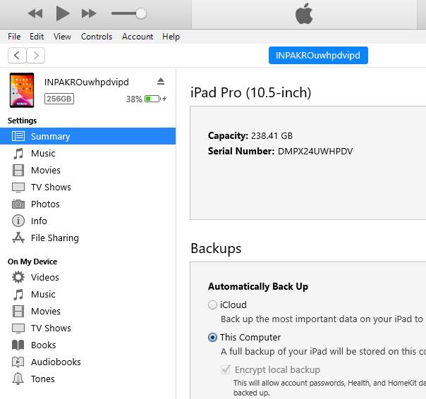
- Tap on File Sharing
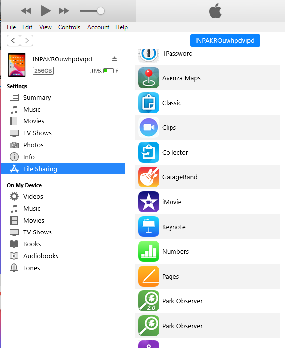
- Tap on Park Observer 2.0 icon to see the list of Park Observer Documents
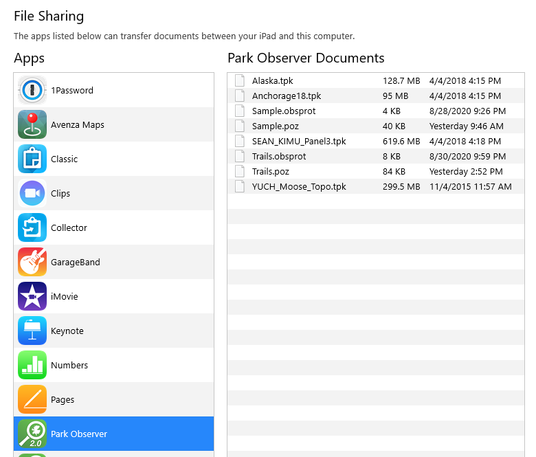
-
Select the file(s) in windows file explorer that you want to add to Park Observer
and drag and drop them onto the list of files in iTunes. The list of files should highlight
with a blue focus ring, and display link when the files can be dropped.
When you "drop" the files they will be copied to the device. If the files already exist
on your device, you will be warned:
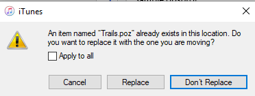
select your preferred option to continue.
Disconnect your device when you are done adding files.
Removing files from Park Observer
Follow steps 2 through 7 in Adding Files to Park Observer.
To copy files from your device to the PC, select the files you want in the list of
Park Observer Documents in iTunes and drag/drop them onto your windows desktop,
or a folder of your choice.
To delete files from Park Observer with iTunes, select the files and press
the delete key on your keyboard.
You will be warned
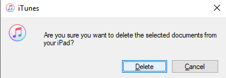
Click Delete to delete the files or Cancel to abort and leave the files on your
device.
Disconnect your device when you are done deleting files.
Disconnecting your device
To safely disconnect your device from iTunes, click on the device icon
Then click on the eject button
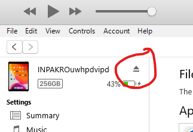
You can now disconnect the cable from the device and the PC.